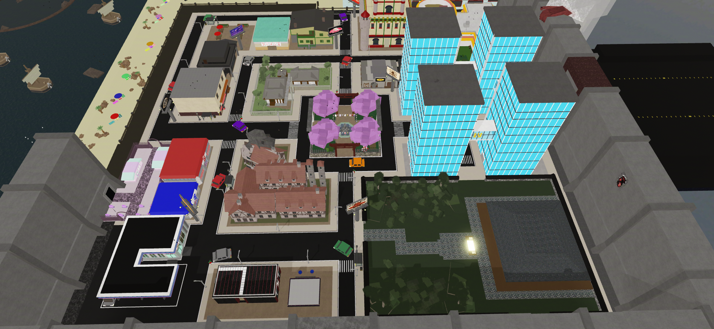
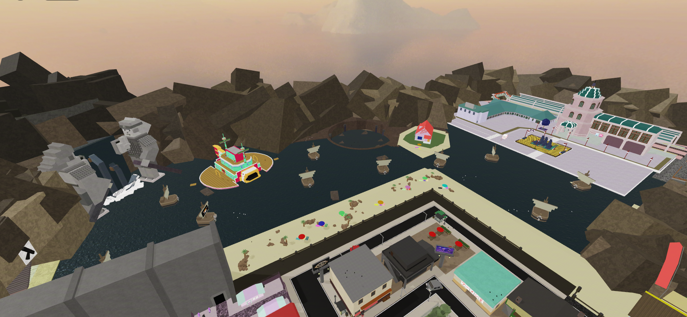

Click any marker to open that location's file. The City loads first. Switch tabs for the Ocean or the Arena.

Escape Team House
Skate Shop And Tea
Ichiraku Ramen
Restaurant
Housing
Escanor Tavern
The Middle
UA High
AOT Town
Poke Mart
Sakamoto Gas Station
Baki Boxing Gym
Zenin Clan

The Valley Of The End
Chunin Exams
Baratie
Crator
Kame House
Morioh Station
THE ARENA
The arena is where it all ends. Every Elimination Battle takes place here, and only one contestant
walks out. The Host built it separately from the rest of the map on purpose.